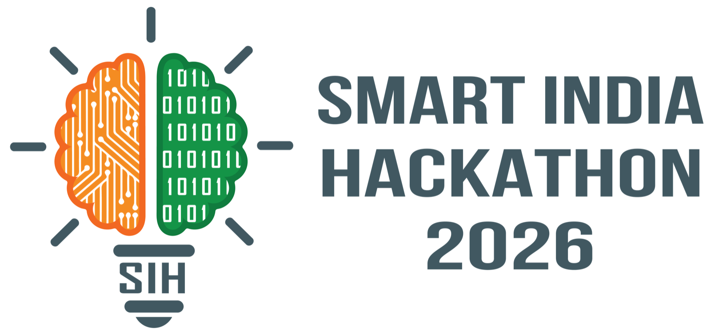
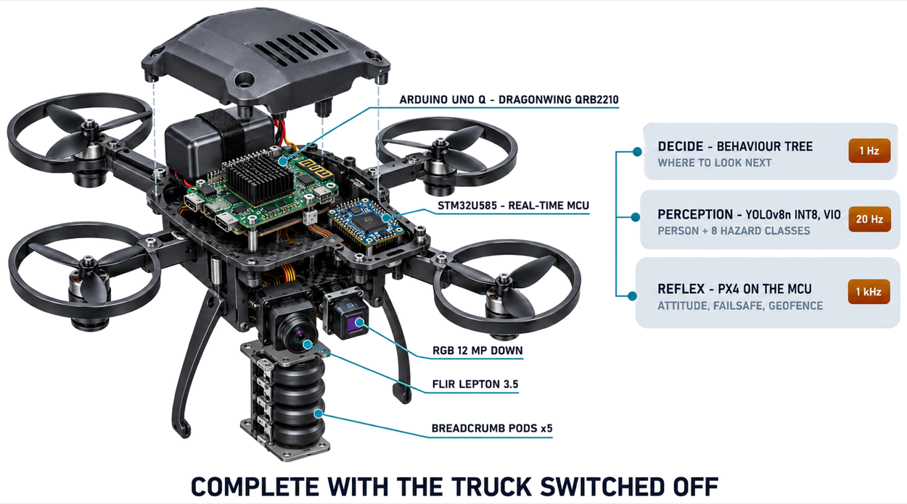
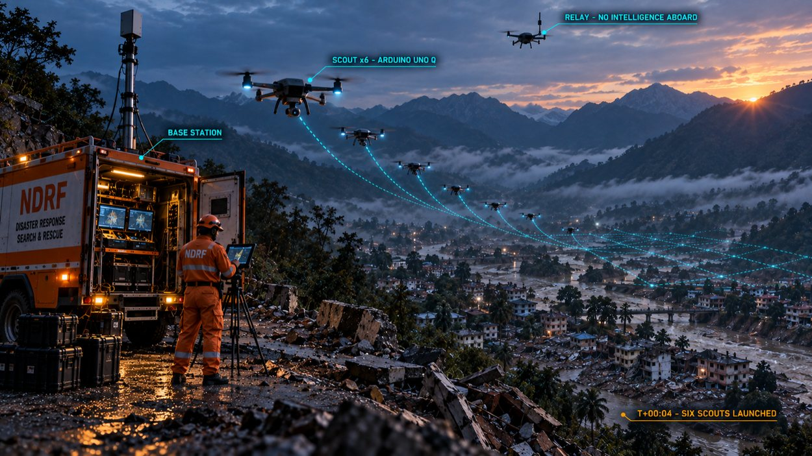
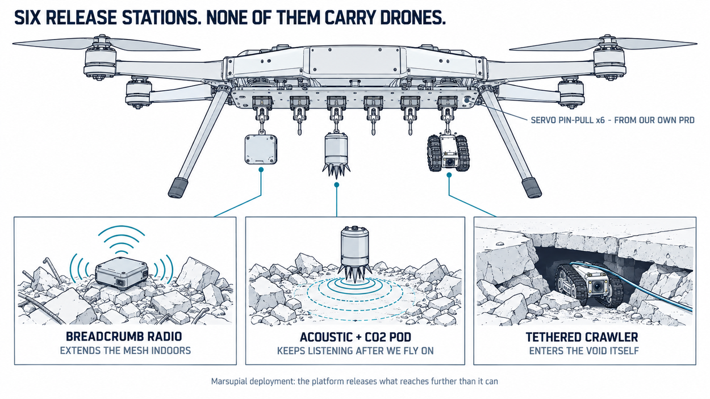
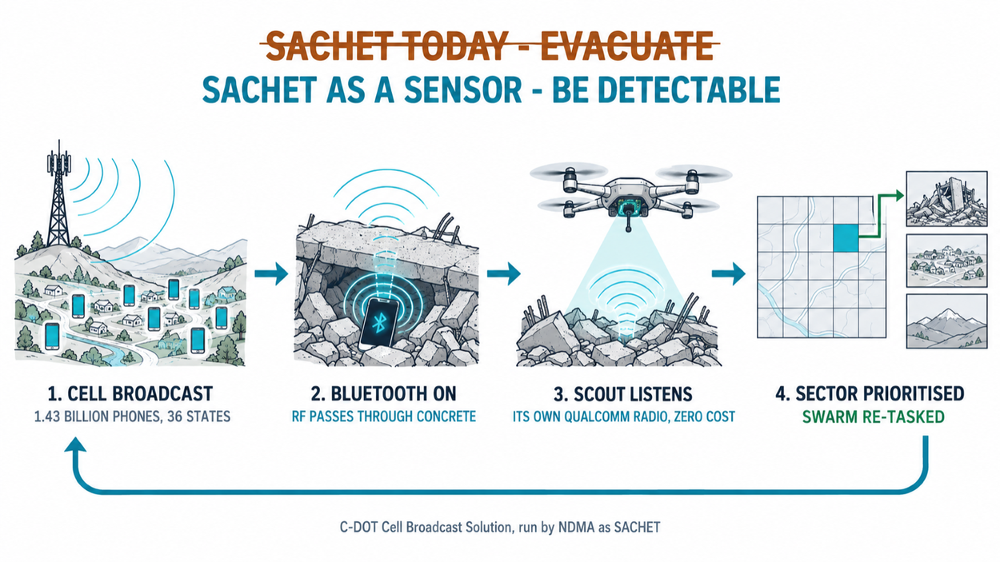
Detailed explanation: One scout is an Arduino UNO Q (Qualcomm Dragonwing QRB2210 + real-time STM32U585) carrying RGB, thermal and its own Wi-Fi/BLE radio. PX4 flies on the MCU at 1 kHz; detection, odometry and the decision tree run on Linux. It is not only a swarm. A single aircraft also carries swappable payloads: breadcrumb radios, acoustic and CO₂ pods, a tethered crawler. The truck is an accelerator, never a dependency.
How it addresses the problem: Wayanad 2024: 1,300 responders, 6 zones, 5+ days, 206 never found. One scout sweeps 0.43 km²/h alone; six sweep the full 15 km² in 5.8 hours, for +64 survivors per 100 trapped.
Innovation and uniqueness: SACHET cell broadcast, inverted. NDMA already reaches 1.43 bn handsets to say evacuate. One message saying turn Bluetooth on makes every phone a beacon, and the scout's own Qualcomm radio is already the receiver. Zero added hardware.
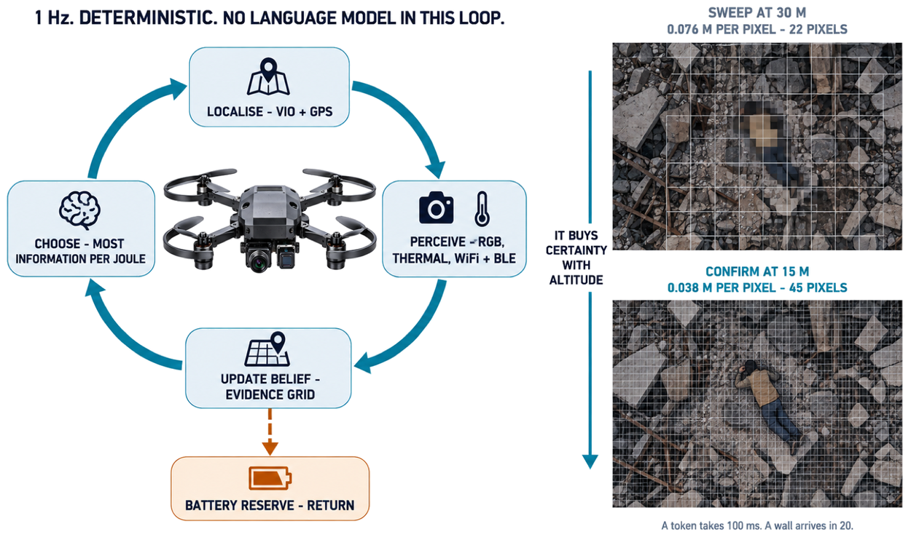
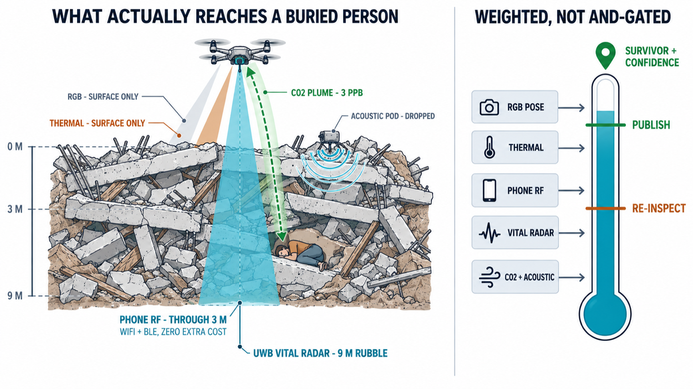
Methodology: Four algorithms, not a wrapper. (1) two-pass descent, SAHI-style, with min-window-cover crop planning, union-find cross-pass merging and weighted box fusion · (2) correlated Bayesian fusion solving Σw = 1, which discounts sensors that fail together and reduces to Chair-Varshney when they do not · (3) prize-collecting Held-Karp route DP, exact, battery reserve inside the DP · (4) 0/1 knapsack for the LoRa frame. 9/9 self-tests against brute force.
Measured, not estimated: YOLOv8n INT8 @640 on Qualcomm AI Hub, real devices: Arduino Ventuno Q (IQ-8275) 1.85 ms / 539 FPS; Dragonwing RB3 Gen 2 (QCS6490) 11.21 ms / 89 FPS. 247 of 247 layers on the Hexagon NPU, zero CPU fallback. The sweep needs 0.22 Hz, so the headroom runs detection, VIO and the radio scanner at once.
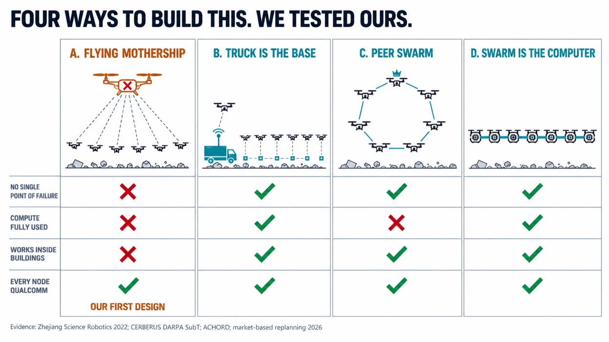
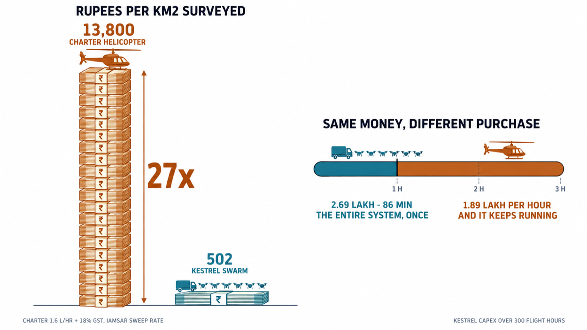
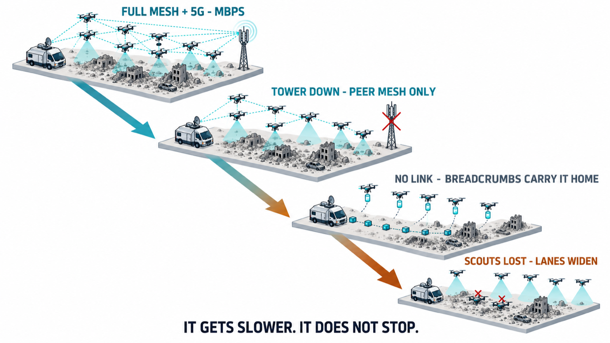
Feasibility: ₹2.68 lakh total, Indian-vendor sourced (Robu / Robocraze / Thundercomm). That is 86 minutes of charter helicopter. Airframe, flight stack and radios are all commodity; the detector is already profiled on real Qualcomm hardware.
Potential challenges and risks: Thermal inverts on sun-heated rubble in daylight · VIO drifts ~0.5% of path, which is 21 m over a full sortie · FINDER-class radar reported three breath signals at Wayanad where nothing was found · a 500 mm airframe cannot enter a collapsed doorway.
Strategies for overcoming them: Independence weighting means no single stream ever decides. The radar that lied is one weighted vote · GPS-denied excursions are bounded to 1–3 min by breadcrumb anchors and loop closure at the truck, giving 1.2–3.6 m, inside the re-inspect radius · interiors are reached by dropped breadcrumb pods, not by flying the sweep frame indoors · and the degradation ladder is designed so the system gets slower, never offline.
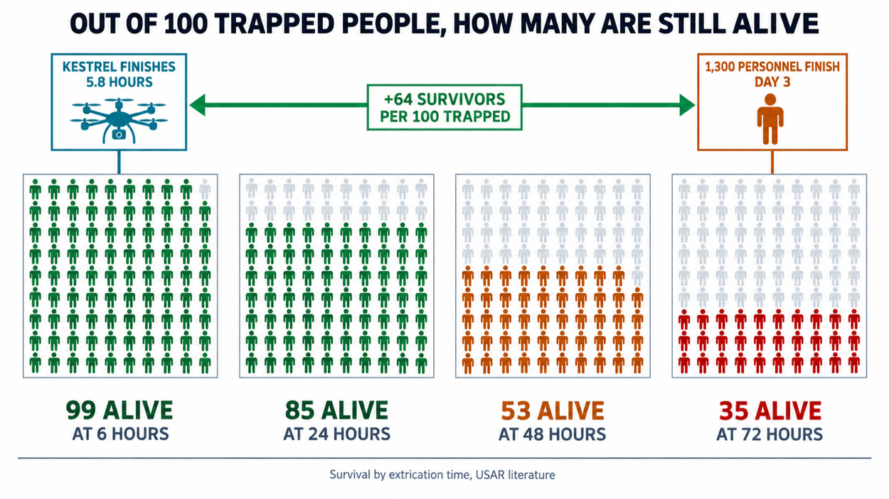
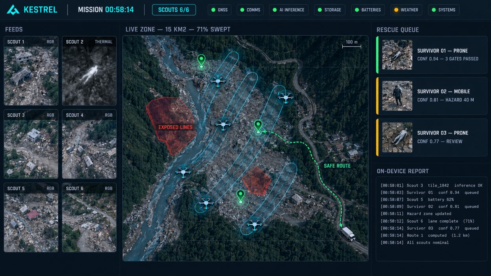
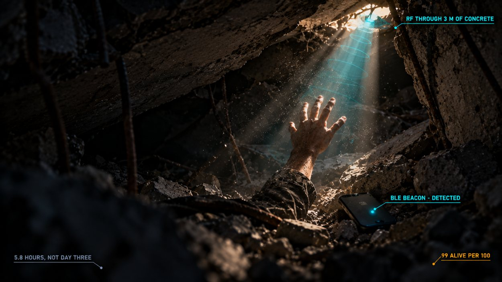
Impact on the target audience: NDRF, SDRF and the Army search at roughly 0.1 km²/h per team. Kestrel sweeps 2.6 km²/h. On the Wayanad footprint that is 5.8 hours instead of five days: 99 alive per 100 at six hours against 35 at seventy-two.
Social: Responders stop walking unstable debris and live power lines to find out whether anyone is there. The aircraft takes that risk, and it takes it at night, in monsoon, without fatigue.
Economic: ₹502 per km² against ₹13,800 by charter helicopter, 27×. Equipping all 738 districts costs ≈ ₹19.86 Cr, which is 0.12% of the national disaster preparedness line. It is already funded; it is a procurement decision, not a budget request.
Environmental: Battery-electric, no fuel burn, and the scout's brain is a ₹5,190 board rather than a ₹50,000 one.
Team CERBERUS, winner, DARPA Subterranean Challenge 2021: base-station compute + breadcrumbed radio nodes
Zhejiang Univ., Swarm of micro flying robots in the wild, Science Robotics 2022: decentralised, no central aircraft
Akyon et al., SAHI, arXiv 2202.06934: slicing raises AP +6.8% on VisDrone with no retraining
Solovyev et al., Weighted Boxes Fusion, arXiv 1910.13302
Chair & Varshney, IEEE TAES 1986: optimal LLR decision fusion; we generalise it to correlated streams
Sensors 18(3) 852: CO₂ + thermal + microphone fusion for trapped-victim detection
NASA JPL / DHS FINDER: 9 m rubble penetration; four men found alive, Nepal 2015
ACHORD / CARA (JPL CoSTAR): communication-aware coordination with droppable radios
Held & Karp, J. SIAM 1962: exact DP for the sequencing problem we solve per sortie
UAV-VLRR arXiv 2503.02465 · AVERY arXiv 2511.18151: VLM split computing for disaster response
Wayanad landslide, 30 Jul 2024: 1,300 personnel, 40 teams, 6 zones, 5+ days, 357 dead, 206 missing, ~15 km²
C-DOT SACHET / NDMA cell broadcast: 1.43 bn citizens, 36 states, 14.5 M tower cells
15th Finance Commission 2021–26: NDRF/SDRF preparedness allocation
DGCA UAS Rules 2021 · Drone Rules amendment: micro/small category, RPC training
keralarescue.in, Kerala 2018: crowd-sourced rescue requests, IEEE Kerala + Kerala IT Mission
Nepal–Tibet glacial flood, Aug–Sep 2026 · Assam floods, Jul–Aug 2026: the live monsoon record
NDMA / NDRF deployment doctrine: 40 teams across 6 zones is the Wayanad baseline we measure against
IAMSAR sweep-width methodology: the ground-team rate our 0.1 km²/h figure derives from
ISRO Bhuvan · Copernicus Sentinel-1 SAR: free pre-flight damage priors
Qualcomm AI Hub: YOLOv8n INT8 @640, QNN DLC, --quantize_io, profiled on physical devices
Arduino Ventuno Q (Dragonwing IQ-8275, Hexagon v75): 1.85 ms · 539 FPS · 247/247 NPU
Dragonwing RB3 Gen 2 (QCS6490, Hexagon v68): 11.21 ms · 89 FPS · 247/247 NPU
Arduino UNO Q: QRB2210 + STM32U585, Wi-Fi 5 + BT 5.1, ₹5,190 (4 GB / 32 GB)
PX4 / ROS 2 / VINS-Fusion: open flight and odometry stack
Third-party: Foundries.io measured YOLOv5 Pico at ~17 FPS on a physical UNO Q
SARD search-and-rescue aerial dataset: 1,980 images, 6,525 person instances, fine-tune in progress
ONNX Runtime Web: the demo executes in the judge's browser, no server and no upload
Honest limit: QRB2210 is not offered on AI Hub, so the scout figure stays third-party
| Device | Silicon | Precision | Latency | Throughput | Compute units | Peak memory |
|---|---|---|---|---|---|---|
| Arduino Ventuno Q | Dragonwing IQ-8275 · Hexagon v75 | INT8 | 1.85 ms | 539.7 FPS | 247 / 247 NPU | 7.5 MB |
| Dragonwing RB3 Gen 2 | QCS6490 · Hexagon v68 | INT8 | 11.21 ms | 89.2 FPS | 247 / 247 NPU | 9.1 MB |
| Arduino Ventuno Q | Dragonwing IQ-8275 · Hexagon v75 | fp16 | 6.77 ms | 147.8 FPS | 247 / 247 NPU | 16.5 MB |
| Dragonwing RB3 Gen 2 | QCS6490 · Hexagon v68 | fp16 | graph will not compose on Hexagon v68: reported as a negative result, not omitted | |||